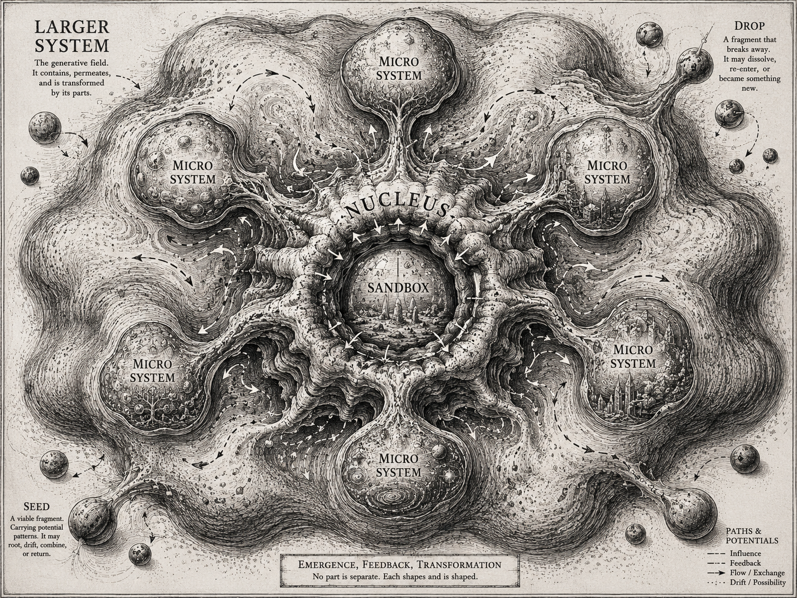

Small does not mean weak
Small does not mean weak. Every large institution contains tiny sites of dense relational potential. When one of those sites is activated, it can reorganize the larger field around it.
Every node may become a field.
Working visual study

How to read this study
The large irregular field permeates every part of the image — it contains, is not separate from, and is transformed by everything inside it. Pressure concentrates that field into a temporary nucleus at the center, and a sandbox sits contained inside the nucleus. Several micro systems grow out from the nucleus as irregular, differently sized outgrowths, not identical satellites arranged around a fixed center. Filaments and pathways connect the nucleus, the micro systems, and the larger field in more than one direction, carrying feedback as well as outward influence. At the edges, detached drops and viable seeds drift away from the main body — some may dissolve, some may return, some may combine with something else, and some may root elsewhere entirely. Every etched dot, filament, or orb in the image may itself contain another relational field.
The atom as analogy
The model uses the atom as a conceptual analogy for density, attraction, relation, stored potential, and disproportionate consequence — not as a claim that institutions obey atomic physics. A tiny part of a system can hold dense relational energy: it can attract people, resources, rules, technologies, pressures, risks, and possibilities. When activated, that small part can reorganize the larger field around it. Atomic Micro Systems does not treat institutions as charts made of stable departments. It treats them as living fields of latent relationships.
Every node may become a field
The model is exponential because every node may become a field. A student is not merely a participant — that student may connect to family, language, disability, career aspiration, financial aid, cultural context, faculty relationships, peer networks, technology access, and public policy. A single accessibility requirement may connect to procurement, curriculum, interface design, faculty training, compliance, student confidence, and platform selection. A single prototype may reveal a missing governance rule, a new staffing need, a trust failure, a new research question, or an entirely different problem worth solving. A micro system is never only one thing — it is a concentrated site from which further systems may emerge.
Anatomy of the model
- Larger system
- The full institutional field — people, formal authority, informal influence, budgets, technologies, histories, incentives, policies, habits, public relationships, infrastructure, risks, and unrealized possibilities. It is not a passive container; it is generative material that every part shapes and is shaped by.
- Pressure point
- A site where multiple institutional forces converge — a service that repeatedly fails, a workflow held together by memory, a population excluded by current systems, a new capability without a responsible deployment model. Pressure is not only a problem; it is evidence of concentrated potential.
- Nucleus
- A temporary concentration formed around a pressure point. It is not headquarters, a permanent department, or a command center — it is a dense working formation of operators, technical expertise, creative technologists, designers, governance and accessibility practitioners, and affected participants, existing only long enough to make the hidden system visible and actionable.
- Sandbox
- A protected experimental chamber that sits inside the nucleus. It tests one bounded, consequential assumption — with explicit evidence requirements, clear decision rights, governance and accessibility constraints, a path for human escalation, and permission to stop — and produces a decision: build, reframe, hold, defer, combine, transfer, or stop. It is an instrument, not innovation theater.
- Atomic nodes
- The smallest visible sites of concentrated potential inside the system — a person, a relationship, a rule, a workflow step, a tool, a cultural assumption, an inaccessible interaction. An atomic node matters not because it is small, but because of what it can attract, connect, and transform.
- Micro systems
- A bounded arrangement of people, technologies, rules, workflows, and feedback, formed when several atomic nodes organize around a bounded purpose. Micro systems are not satellite departments — they remain part of the larger field, even when they develop some independence.
- Stems, filaments, and pathways
- Connections between parts of the system are not simple reporting lines. They may carry evidence, influence, resources, authority, data, trust, conflict, memory, requirements, and feedback — direct, weak, temporary, hidden, or cyclical. Movement through them is bidirectional: micro systems alter the larger field and feed evidence back into it.
- Drops
- A fragment that leaves the visible system. It may dissolve, drift, re-enter, combine elsewhere, or become something new. Detachment is not automatically failure.
- Seeds
- A fragment carrying enough pattern and viability to root elsewhere — an independent project, a new organization, a portable method, a policy adopted by another institution, a curriculum, or a new micro system in another field.
Creative-technology incubators as systems infrastructure
A creative-technology incubator should not be treated as an arts program added after the institutional strategy is complete. It can function as infrastructure for discovering atomic potential — repeatedly assembling temporary nuclei around difficult questions by bringing together institutional insiders, creative technologists, researchers, engineers, designers, accessibility practitioners, governance specialists, frontline workers, and people directly affected by the system. The incubator does not merely produce prototypes or exhibitions. It produces a clearly formed institutional question, a map of atomic nodes and relationships, a bounded sandbox, evidence from real or sufficiently realistic use, product/governance/operating requirements, a decision to build, reframe, defer, combine, or stop, micro systems capable of entering institutional life, and seeds capable of traveling beyond the originating institution.
Worked case: AI and youth education
A university receives public funding to prepare students for an AI-shaped world. The first request may sound simple: "Integrate AI across the university so students are ready for the future." Atomic Micro Systems treats that request as a signal, not yet as a solution.
The institutional field decomposes into atomic clusters: students, faculty, curriculum, infrastructure, accessibility, governance, public funding, career pathways, and community and public trust. Each cluster is itself dense with further relationships — for example, "students" contains undergraduates, first-generation students, disabled students, multilingual students, students with strong or weak device access, and students already using or afraid of AI.
Rather than attempting "AI across the university," a nucleus may form around a bounded pressure point:
AI-supported research and writing for first-generation undergraduates with accessibility needs.
A possible nucleus brings together students, a writing-center director, faculty from several disciplines, an accessibility specialist, an instructional designer, an AI engineer, a librarian, a governance representative, a public-funding representative, and a creative technologist holding the whole institutional question. A six-week sandbox might test one course, one assignment, one configured AI environment, one disclosure protocol, one accessibility baseline, and one human-escalation path, gathering evidence on writing quality, comprehension, confidence, accessibility, faculty workload, and the true cost of human review.
The sandbox may generate an accessible AI writing environment, a faculty training program, a new authorship and disclosure policy, a peer-mentor network, a multilingual support model, an AI literacy curriculum, a revised procurement standard, a community-college partnership, or a new research program — each output may remain connected to the original nucleus, become its own micro system, or detach as a seed that takes root elsewhere.
This example does not imply that OpenAI or any AI provider has adopted, endorsed, or commissioned this model.
Design principles
- Begin with the field, not the tool. Do not begin by asking where AI can be inserted; begin by asking what the institution is trying to become, where the work actually breaks, and where trust is most vulnerable.
- Treat smallness as density. A small site may contain more useful information than a broad transformation mandate.
- Make relationships visible. Map attraction, dependency, authority, friction, trust, and feedback, not only nodes.
- Build temporary nuclei. The nucleus should exist for the question, not for its own institutional survival.
- Protect the sandbox. It requires enough reality to reveal truth and enough protection to permit uncertainty, failure, and stopping.
- Permit emergence. Do not predetermine every micro system that should result.
- Track drops and seeds. Important outcomes may leave the formal pathway; build methods for noticing what travels.
- Design for returnability. Every AI-enabled micro system should preserve a path back to human interpretation, appeal, correction, and accountability.
- Let evidence alter the original ambition. The process improves the institution's decision — it does not exist to validate the first idea.
- Expect multiplicative consequence. Every activated node may reveal additional systems; plan for learning to spread without assuming every discovery should scale.
What this model is not
Atomic Micro Systems is not:
- a hub-and-spoke org chart;
- a central office controlling satellite teams;
- a collection of disconnected innovation projects;
- a permanent central command team;
- a linear innovation funnel;
- a generic "discover, design, deliver" consultancy framework;
- an indiscriminate scaling model;
- a justification for endless pilots;
- an aestheticized workshop process;
- or a claim that every fragment should become a product.
It is a method for concentrating attention, testing consequence, generating evidence, and allowing new systems to emerge responsibly.
Working vocabulary
- Atomic potential
- A small site containing disproportionate capacity for relation, attraction, transformation, and consequence.
- Atomic node
- A visible unit within the larger field that can connect, activate, or become part of a micro system.
- Larger system
- The full institutional field of people, power, tools, rules, histories, infrastructures, and possibilities.
- Pressure point
- A site where institutional forces converge and where concentrated investigation may reveal leverage.
- Nucleus
- A temporary multidisciplinary formation assembled around a consequential pressure point.
- Sandbox
- A bounded experimental chamber inside the nucleus, designed to produce evidence and a decision.
- Micro system
- A bounded arrangement of people, technology, rules, workflows, and feedback formed around a specific purpose.
- Micro orb
- A visual and conceptual representation of a micro system as a dense, relational field capable of generating further systems.
- Drop
- A fragment that detaches and may dissolve, return, combine, or transform elsewhere.
- Seed
- A viable detached fragment carrying enough pattern to root in another context.
- Returnability
- The preserved ability to return from automated or AI-mediated action to human interpretation, correction, appeal, and responsibility.
Research questions
- How can atomic potentials be identified before a formal project exists?
- What evidence distinguishes a pressure point from ordinary institutional friction?
- Who has authority to form a nucleus?
- How should the nucleus include people affected by the intervention?
- What makes a sandbox realistic enough to reveal consequence?
- When should a micro system remain connected, detach, dissolve, or scale?
- How can invisible drops and seeds be documented?
- What governance follows a micro system after the original nucleus dissolves?
- How can the model prevent successful experiments from becoming harmful obligations?
- What visual language best represents attraction, pressure, emergence, feedback, drift, and return?
Provisional statement
Every large institution contains tiny sites of exponential possibility. Atomic Micro Systems locates those sites, concentrates a temporary nucleus around them, and places a protected sandbox at the center. Evidence from the sandbox activates atomic nodes, which may cluster into micro systems, alter the larger field, detach as seeds, or return with new information. Transformation is therefore not imposed on the institution as one enormous program. It emerges through dense, connected, governable systems capable of changing the whole.
Read the full concept note and the schema card on GitHub.